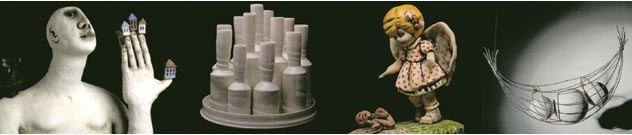
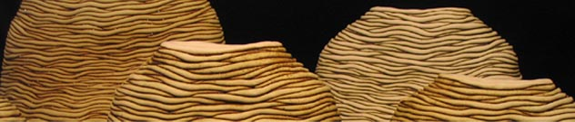
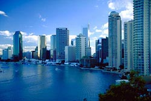

| VERGE 2006
The 11th Australian National Ceramics Conference
Verge, the 11th National Ceramics Conference will be taking place
in Brisbane, Australia, from 10-14 July 2006. Its theme is "Sustainability
for the Individual and the Collective". The conference aims
to celebrate and debate contemporary ceramics practice and to look
at what can be done to ensure a sustainable future for ceramics.
Verge promises to be an interesting event, with eminent British-American
Gallery Director and author Garth Clark delivering the keynote speech.
Other key speakers include Robert Bell (Australia), Janet Deboos
(Australia), Mark Del Vecchio (USA), Moyra Elliot (NZ), Gwyn Hanssen
Pigott (Australia), Chris Lefteri (UK), Herbert Maly (Luxemborg),
Janet Mansfield (Australia) and Kevin Murray (Australia). Demonstrators
include Greg Daly, Johanna DeMaine, Michael Doolan, Kevin Grealy,
Victor Greenaway, Won Seok Kim, Ludmilla Kovarikova, Vipoo Srivilasa
and Kenji Uranishi.

Panellists and speakers will include Michael Keighery, Ray Cavill,
Alexis Tacey, Phillip Hart, Fleur Schell, Johanna DeMaine, Bernadette
Mansfield, Mel Robson, Merran Esson, Wendy Hatfield-Witt, Gerry
Wedd, Peter Battaglene, Shannon Garson, Avi Amesbury, Catrina Vignado,
Montelupo, Ray Meeker, Tampopo no ye, Frank Gordon, Brian Parkes,
Bernard Kerr, Greg Daly, Damon Moon, Karen Weiss, Helen Stephens,
Ian Were, Virginia Jones, Rowley Drysdale, Cathy Keyes, Alison Bailey
and Graham Mercer.
Download
Preliminary Programm (pdf format)
Download
registration form (pdf)

About Brisbane
Brisbane,
the capital city of tropical Queensland, is midway up the east coast
of Australia, with the Gold Coast to the south and the Sunshine
Coast to the north. Visitors to Brisbane enjoy a wide range of landscapes
and lifestyles.
The Brisbane River winds its way through the city. A river cruise
is a very pleasant way to see the city and to get to the many riverside
tourist attractions.
Surrounded by some spectacular country, there are a variety of day
trips to experience from Brisbane including the Gold Coast, the
Gold Coast Hinterland, Mount Glorious, the Sunshine Coast and the
offshore islands. More...
More Articles
|